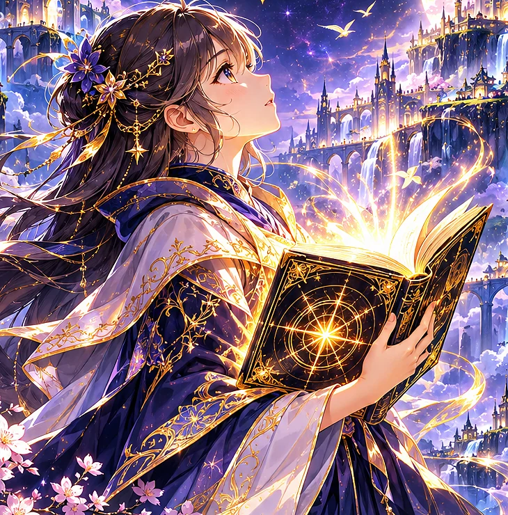

MẬT ĐIỂN LỤC GIỚI ✦ NHẬT KÝ CỦA YUNA
CHƯƠNG 01 — GIỚI THỨ NHẤT
Cánh cửa của bốn chữ ấn
❧ ✧ ❧
✧ 六界の秘典 ✧01 / 25
Hãy bước vào Điện Gương cùng Yuna. Mỗi chữ Kanji là một ấn ký giữ lại một phần của thế giới.

Chạm vào ấn ký để mở bí mật của chữ.
Tui đang thay thiết kế bảng điều khiển bằng trải nghiệm sách mở. Truyện, âm On/Kun và ví dụ lấy từ dữ liệu Kanji N5 hiện có; các chương vẫn dùng minh họa theo từng cõi cho tới khi có tranh riêng đủ nét. Bản thử này không thay đổi tiến độ học trên website chính.
Lớn
Thông tin âm đọc và ví dụ lấy từ PDF N5. Hình ảnh gợi nhớ là liên tưởng, không phải giải thích nguồn gốc chữ Hán.
Chọn chương để đọc. Bản V2 giữ nguyên dữ liệu 25 chương hiện có.